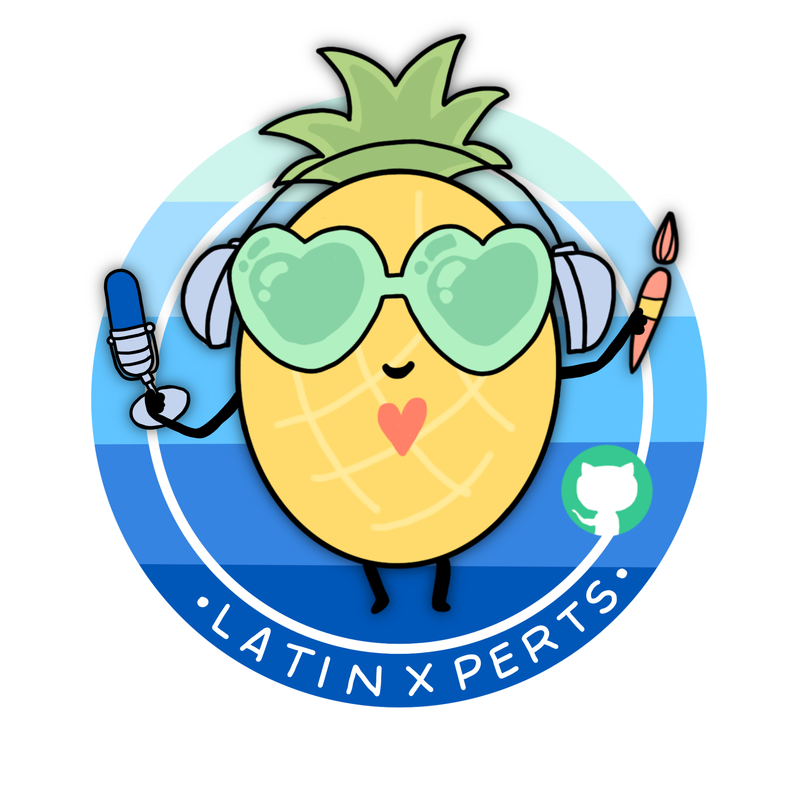
Este año se ha estrenado un nuevo proyecto en GitHub Education: GitHub Steam Team, de la mano de talentosos Campus Experts se abrieron nuevos espacios virtuales en el canal de Twitch para compartir diferentes perspectivas, ideas y proyectos.
We are taking GitHub Campus TV to the next level with the help of emerging developers! How? Students from around the world are coming together to host weekly streams on Twitch. Streams will focus on everything from coding challenges to preparing for interviews. Introducing the GitHub Education Stream Team
LatinXperts es la propuesta de Fernanda Ochoa, GitHub Campus Expert y Sherpa Digital en Microsoft, quién episodio tras episodio ha contado con la participación de invitados de diferentes campos para platicar de diferentes temas con una perspectiva bastante interesante: Latinos en tecnología.
Así que Visual Partner-Ship no podía dejar escapar la oportunidad de ilustrar este proyecto, y aquí te compartimos no solo una galería de ilustraciones, esto es una experiencia de aprendizaje.
Si quieres volver a ver todos los episodios de la temporada 1 te dejamos el canal de twitch de GitHub Education.
Como facilitador visual me gusta sentirme retado al dibujar un nuevo contenido, normalmente dibujo más conferencias técnicas que tienen un timing particular: términos técnicos, código, demos, etc.
El reto de ilustrar LatinXperts tiene muchas aristas: dibujar todo el episodio de principio a fin, controlar los tiempos para terminarlo unos minutos antes de cerrar y tener oportunidad de enviar la ilustración para que fuera presentada, tener tiempo para enviar los tweets y todas las publicaciones de las redes sociales, por mencionar algunos. La verdad es que esto se resolvió rápido porque solo es cuestión de organizar mis tiempos y considerar esto, en mi forma de trabajo esto significa ilustrar 45 minutos efectivos, tener 5 minutos más para dar color y detalles, enviar la imagen, y hacer las publicaciones. Esto para mí es muy común en mi rutina y al parecer lo tengo bajo control. 😁
Este año he estado ajustando mi estilo visual, porque es algo que me gusta hacer, encontrar nuevas formas, experimentar con otras y así; creo que es en Latinxperts donde fui asentando las bases visuales e iconográficas de un estilo visual original. Veámos.
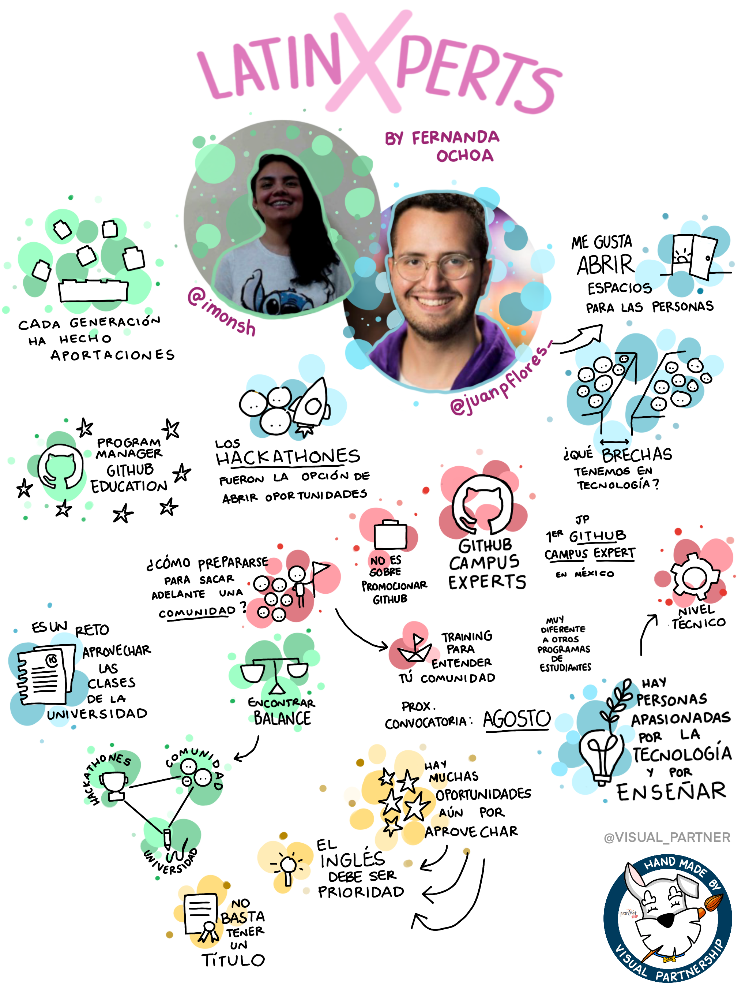
Evidentemente el primer episodio era la inauguración de este proyecto, además de que Fer y Juan Pablo son dos grandes amigos. Si comparan el último registro gráfico con este primero tal vez habra quien diga que esta ilustración resultó muy improvisada.
La realidad es que en esta ocasión tenía el reto de proponer un diseño inicial, y eso siempre me lleva tiempo porque tengo que probar diferentes formas, jugar con los elementos, decidir qué colores usar, cómo ajustar los rótulos de Visual Partner-Ship, las fotos de los invitados, etc.
He estudiado a Joan Miró, recomendación de mi gran maestro Pedro Kóminik, por el uso tan económico y preciso de los colores, así que decidí no pensarle de más y guiarme con el uso de los colores básicos para darle composición: azul, amarillo, verde, y rojo. Algo que me ha gustado mucho es darle un toque original y propio con el degradado de colores y el uso de las esferas.
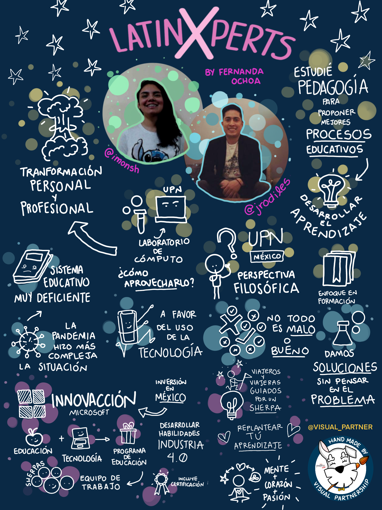
Jugar con los colores es siempre un reto, así que ahora decidí aventarme a probar un fondo oscuro. Aunque pude conservar algunos colores para las esferas, enfrentarme al uso del blanco y lidiar con la monotonía fue la verdadera aventura. Me gusta llenar todo el espacio con ideas porque suelo ser muy bueno escuchando y puedo capturar mucha información, pero tener este enfrentamiento del color de fondo por vez primera si fue bastante complejo.
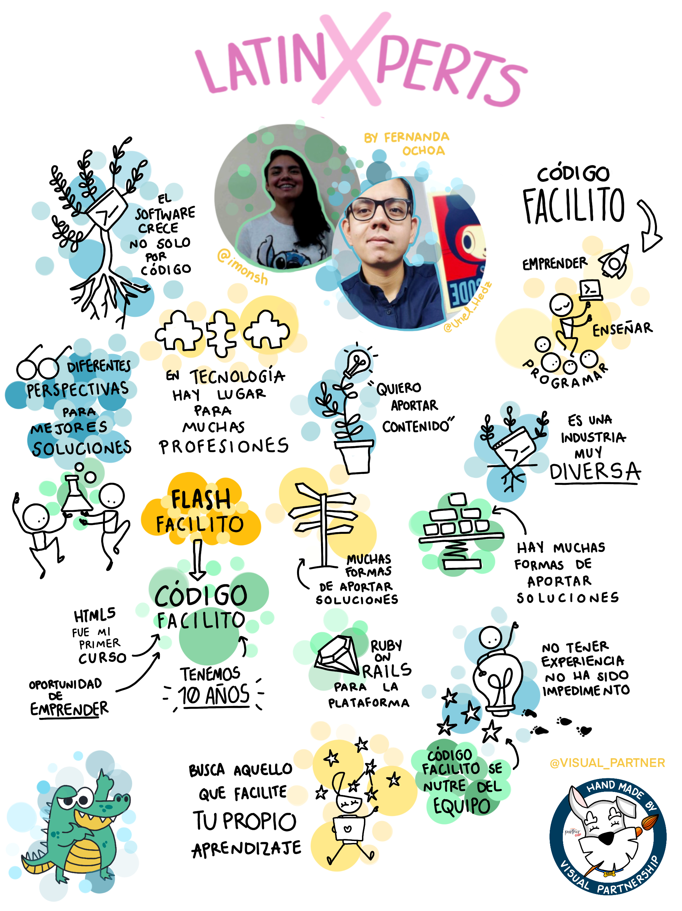
Después de jugar con el color de fondo, decidí regresar al fondo blanco porque me sentí mucho más cómodo, y regresar me hizo sentir todavía más. En este episodio decidí no cambiar tantas cosas del plantemianto del primer episodio, y solo ajustar una sola cosa a la vez, en este caso jugué con el tamaño de las esferas de color aumentando su tamaño.
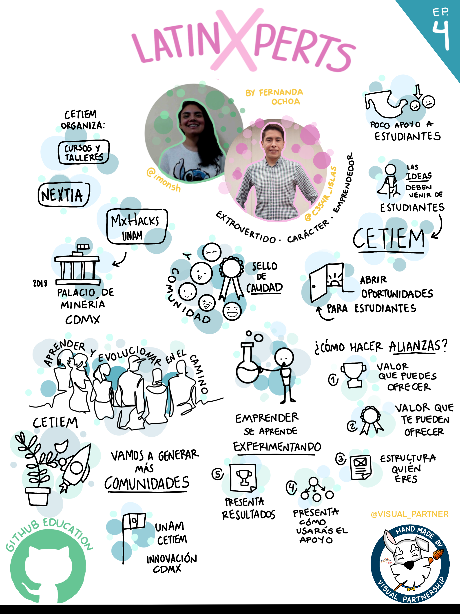
Creo que en este episodio entendí que había cosas en la conversación que no tenían que ser traducidas tal cuál en palabras y que entonces podía complementar con más iconografía, este registro gráfico me parece que tiene menos texto y más íconos, y quisé también cambiar los colores y usar uno solo con degradaciones. Como quería ir paso a paso, le agregué un par de ajustes como la pestaña azul con el número del episodio, el logo de GitHub Education y la barra negra del fondo.
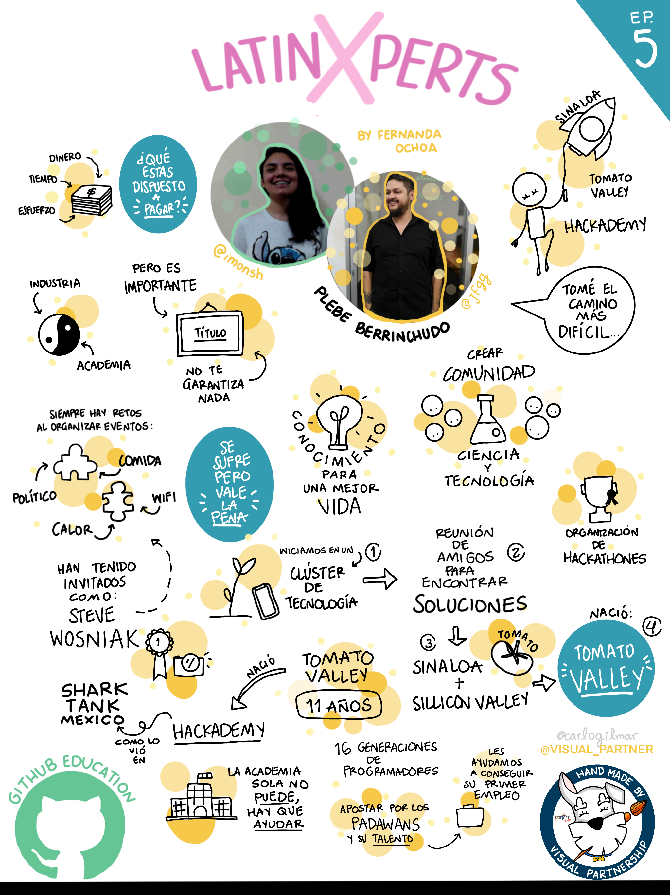
Hay conversaciones que tienen un ritmo y un contenido muy variado, y en el caso de LatinXperts siempre es una mezcla de perspectivas entre Fernanda y sus invitados. En filosofía se habla de la dialéctica como un método de generación de conocimiento en un modelo sencillo pero complejo: existe una tesis que se contrapone frente a una antitesis y el resultado termina en una síntesis. Esto no quiere decir que para crear conocimiento tienes que pelearte con otra persona, o por el otro lado, que cualquier charla es una dialéctica. Se necesita tener muy claro de qué va, y entonces estructurar y clarificar las dos miradas que se contraponen. Esto es bastante complejo, y suele darse en muchas formas: una charla, una conversación, una clase de universidad, etc. Lo más interesante es que como facilitador visual tengo la gran oportunidad de hacer esa clarificación y mostrar el resultado a nivel visual por medio del registro gráfico.
En este episodio conservé la monotonía de colores, ahora con el amarillo, y agregué las esferas azules en las que podía elegir tres ideas que a mí me parecieran importantes en el discurso.
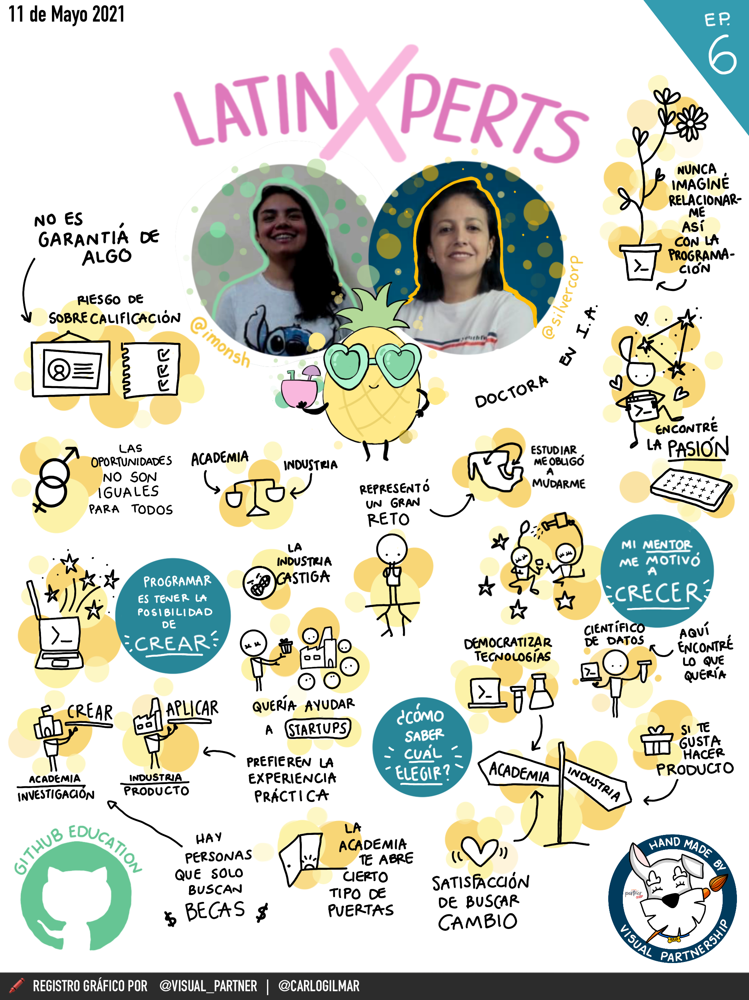
Todos los elementos planteados desde el primer episodio me llevaron a cuadrarlo de mejor forma en este episodio: el uso de las esferas azules para acentuar tres ideas, la monotonía del amarillo con degradaciones, el equilibrio entre íconos y rótulos, pero además el uso de la barra negra para colocar la info de Visual Partner-Ship, la decisión de poner un emoji, el uso de letra y su tipografía, la fecha, y ya animado hasta un diseño de la piña.
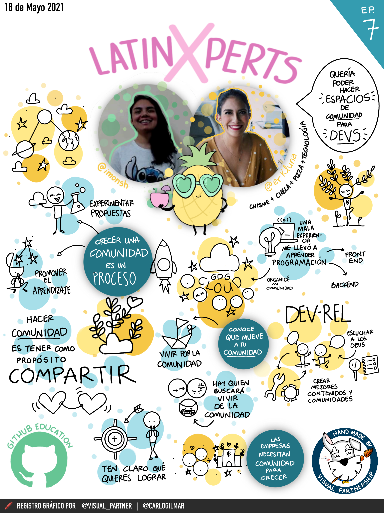
En este punto estaba ya contento con estilo que había encontrado al que podía hacerle un par de ajustes más: el sombreado de las ideas principales y el uso de dos colores en vez de uno.
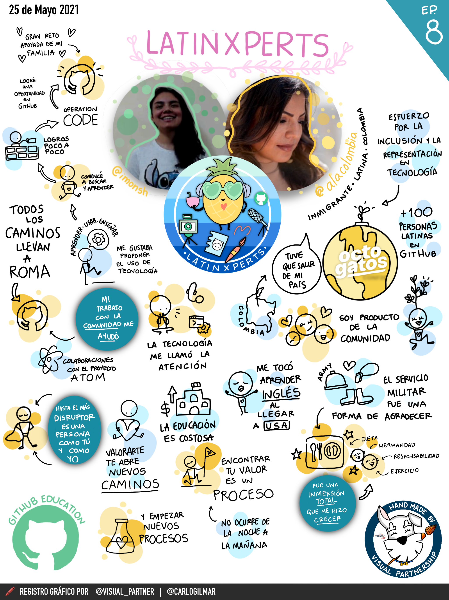
Cabe mencionar que tengo el placer de conocer a muchos de los invitados de LatinXperts, y Andrea ha sido alguien que me ha ayudado muchísimo y me ha dejado colaborar con ella para varios proyectos, por lo que si, este episodio era muy especial para mi.
De verdad me había gustado mucho llegar a este estilo, entonces antes de la charla, preparé un par de cambios importantes como las guirnaldas rosas del título de LatinXperts, pero sobre todo el logo completo de la piña que es una ilustración que tuve que hacer por aparte y que es un proceso diferente al de hacer registros gráficos.
A veces el tiempo se vuelve una limitante importante, en casos así donde se presenta el registro gráfico en la misma charla se vuelve aún más importante, por lo que aquí pueden ver que los dibujos están sobre las esferas cuando suelo presentarlos con fondo blanco para hacer el contraste con el color de fondo. En fin, son cosas que pasan.
Andrea siempre me ha dicho lo mucho que le gusta mi trabajo visual, y sobre todo en este episodio quería poder realizar un registro gráfico que fuera un espejo fidedigno de la charla, que fue un tema más autobiográfico, y por eso era importante no solo capturar las partes cruciales de una historia de vida, sino la combinación con los íconos, el acomodo, y los colores: la posibilidad de hacerle ver al otro sus propias experiencias de vida.
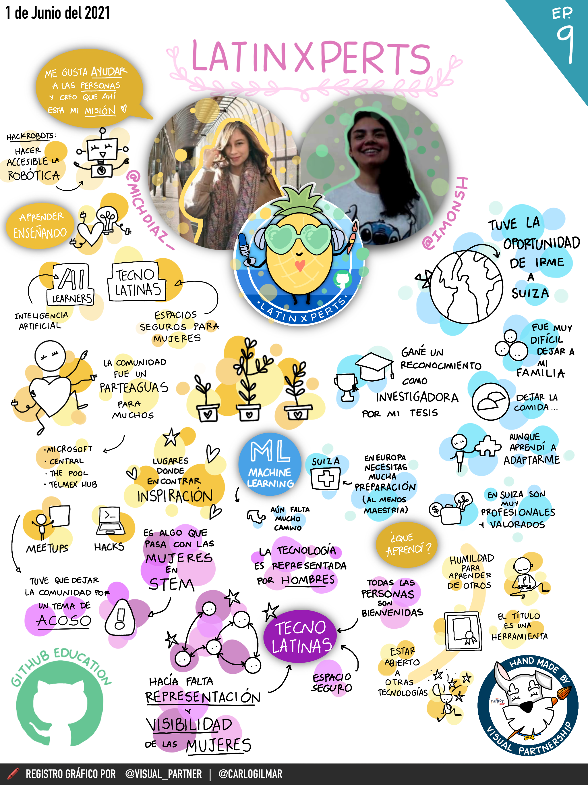
Como mencione antes, agarrarle cariño a LatinXperts fue fácil por muchas cosas, una de ellas es que muchos de los invitados son también mis amigos, en especial Mich con quién tuve la fortuna de compartir salón de clases en la universidad.
Aunque me gustó mucho el estilo que ya había logrado, seguí con la misma idea de ir ajustando paso a paso algunos detalles y aquí decidí incluir otro color más, pero además empezar a experimentar con el sombreado para crear zonas de ideas, mi intención principal era hacer que alguien notará que habían 3 momentos diferentes identificados por cada color.
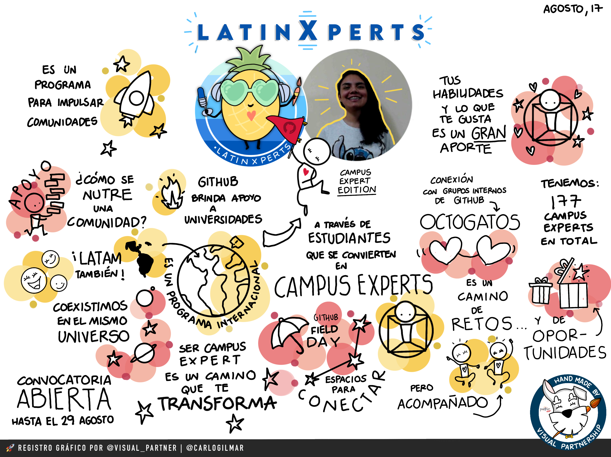
Este episodio ha sido épico en todos los sentidos. Las convocatorias de Campus Expert estaban abiertas, entonces este episodio era sobre el programa de GitHub Campus Expert en un crossover entre David, Juan Pablo y yo incluido como invitado.
Si de por sí dibujar es todo un trabajo, participar en una conversación y dibujarla al mismo tiempo es otro nivel diferente pero retador.
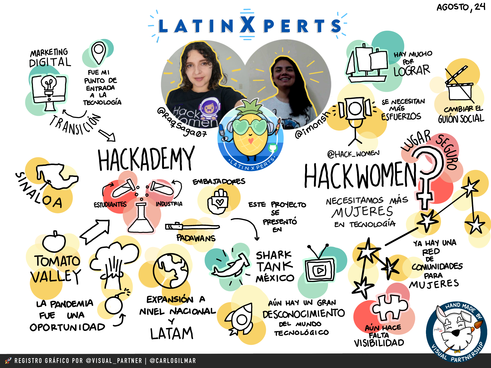
Seguir dibujando en horizontal me resulta más cómodo que en vertical, así que en este episodio decidí también usar los colores para denotar ciertas cosas: el amarillo de fondo general, el verde para situar tres ideas secundarias, y el rojo para acentuar las tres ideas generales, todo esto a mi consideración. Me gusta mucho cuando los íconos tienen mayor dimensión y los rótulos pasan a segundo término como complemento.
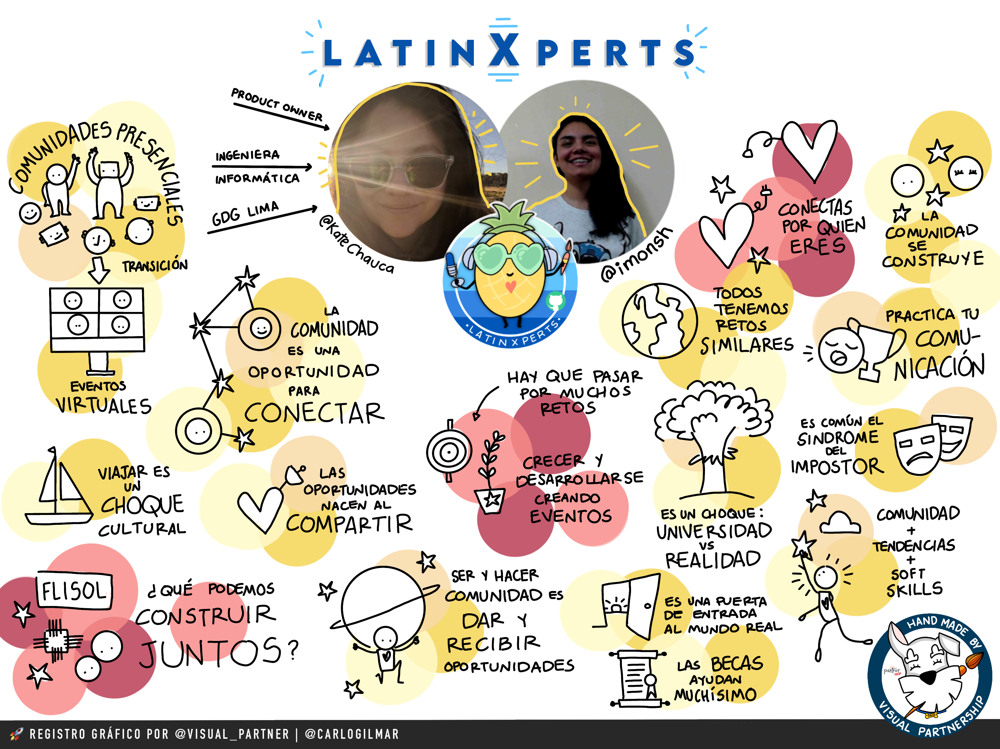
Y finalmente el episodio final de LatinXperts. Todos los episodios he ajustado cosas, y no significa que mi estilo debe tener todos los ajustes. Lo mejor ha sido ir descubriendo nuevas herramientas que pueden sumar a mi estilo y hacerlo único y original, irlos puliendo poco a poco, y llegar a estos resultados. A veces se suele despreciar los primeros intentos de cualquier cosa, pero la realidad es que si no hubiera hecho así los primeros, de ninguna forma hubiera podido llegar a los últimos resultados, porque es un proceso de prueba y error, y no por eso deja de ser valioso este trabajo, tanto el primero como el último son ilustraciones que llevaron un esfuerzo importante y que forma parte de un conjunto de aprendizajes que me han permitido evolucionar mi estilo, y que mejor que hacerlo con amigos.
Gracias por leer y acompañar a LatinXperts en la primera temporada, por todas sus reacciones y comentarios tan lindos a mi trabajo, a Fer Ochoa por su increíble trabajo y a GitHub Education por abrir este espacio. 😁
Nos seguimos leyendo, @carlogilmar.